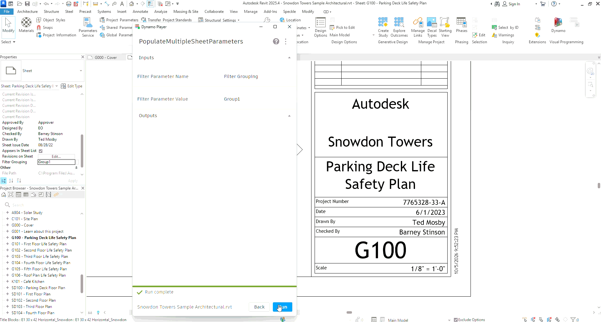
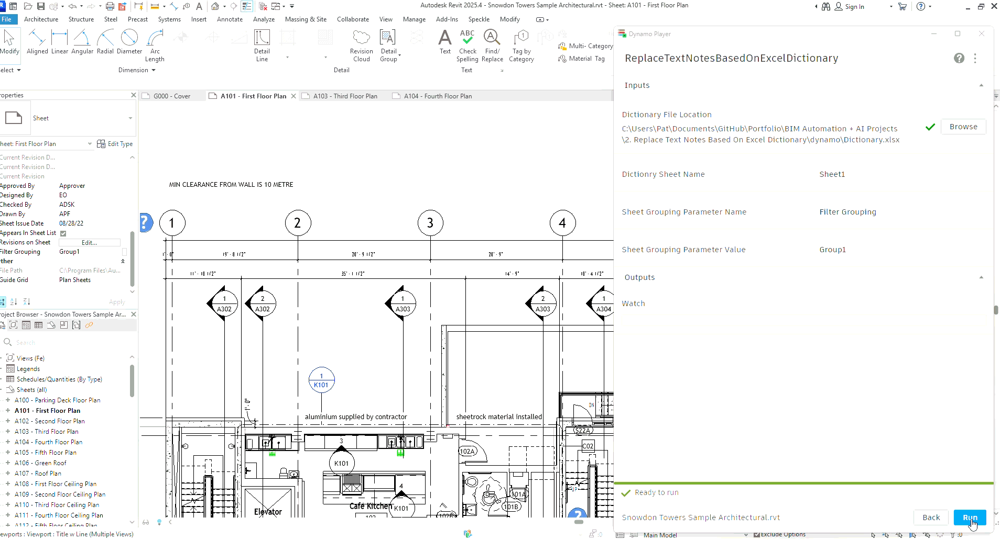

BIM AUTOMATION + AI
SAMPLE PROJECTS
Three Dynamo workflows for cleaning up sheet documentation in Revit. Two are rule-based automation; the third adds AI, using a local language model (Ollama) to rewrite text notes.
1. Populate multiple title block sheet parameters
Batch-update title block parameters across hundreds of sheets in one run.
Revit · Dynamo · Python
The Problem: Title block values change constantly during a project. Updating them means either typing cell-by-cell in a sheet list schedule or editing each sheet in the Properties palette. Both are slow, repetitive, and error-prone, and they get worse with every sheet you add.
The Solution: A Dynamo script that updates multiple title block parameters across any number of sheets at once. Sheets are grouped by a parameter you choose, you enter the values through a simple UI, and an execution report confirms exactly what changed.

How it works:
Choose grouping
Sheets are organized by a parameter you select
Enter values
Add parameter names and values in the UI
Run script
Values are written to every sheet in each group
Review report
Successes, errors and missing parameters are listed
Key features:
Batch updates
Update multiple parameters across all sheets in a single run.
Dynamic grouping
Group sheets by any sheet parameter, with no script changes needed.
Execution report
Flags errors and missing parameters with the affected sheet numbers and titles for quick verification.
2. Replace text notes based on Excel dictionary
Standardize wording across hundreds of Revit text notes with a simple Excel find-and-replace dictionary.
Revit · Dynamo · Python · Excel
The Problem: Text notes on Revit sheets, such as general notes, keynotes and specification callouts, tend to drift in wording across a project. Standardizing a term, correcting a spelling or updating a phrase usually means opening each sheet and view to edit notes one by one, or using Revit's Find/Replace tool, which only handles one search term at a time. Both are tedious, easy to get wrong, and scale poorly across dozens or hundreds of sheets.
The Solution: A Dynamo script that reads a two-column Excel dictionary of words to find and what to replace them with, then checks every text note on your selected sheets, and the views placed on them, against every entry. Notes with a match are rewritten in the model, and the output lists each changed note with its sheet number and updated text.

How it works:
Enter inputs
Sheet filter parameter and value, dictionary file, and worksheet name
Collect notes
Dynamo gathers text notes on the filtered sheets and their views
Replace text
Each dictionary entry is matched as a whole word and applied
Review output
Only the changed notes are listed with their sheet numbers
Key features:
Dictionary-driven
Many find-and-replace pairs in a single run, and a wording change only needs an Excel edit, not a script edit.
Whole-word matching
Replaces "is" without touching "isometric", and handles as-typed, UPPERCASE and Capitalized forms from one row.
Targeted by sheet group
Filter by any sheet parameter to clean up one discipline, or only the sheets being issued.
Reusable across projects
Keep separate dictionary sheets, such as abbreviations, UK to US spelling, fire rating wording and typos, and pick one per run.
3. AI assisted text note updater
Rewrite Revit text notes into as-built wording with a local AI model, with every change approved by the user.
Revit · Dynamo · Python · Ollama
The Problem: Models converted from IFC still carry text notes written as design intent, such as "Install anchors as required" or "Contractor to verify dimensions on site". As-built documentation should read as a record of what was done. The dictionary approach in entry 2 handles only word or exact phrase replacements. It does not read the whole sentence, so it cannot adjust tense or grammar, remove a clause that no longer applies, or know when a note should be removed entirely. Automating this more intelligently calls for AI, but cloud-based tools can be a security risk, since they send drawing text outside the project's controlled environment and may break confidentiality requirements.
The Solution: A Dynamo workflow that collects the text notes on your chosen sheets and their views, then uses a local Ollama model to rewrite them following editable rules. A browser review page shows each original note beside the proposed one, and only the notes you approve are written back to Revit. Nothing is sent outside your computer.

How it works:
Extract notes
Dynamo collects text notes from the filtered sheets and their views
AI suggests
Local Ollama model rewrites notes using editable rules
User review
Approve, reject or edit each note in the browser review page
Apply and report
Approved notes are written to Revit and logged in Excel

Key features:
Human in the loop
Nothing is applied without approval, and flagged notes are never bulk-approved.
Local and private
Runs on Ollama, so no project text leaves the machine.
Understands sentences
Handles tense, whole-phrase removal, and deletes notes that end up empty.
Rules written in plain language
The AI's instructions are simple, editable text rather than code. Adapt the wording rules to each project's requirements, with no programming knowledge needed.
Built-in safety checks
Protects numbers, tags and acronyms, flags unexpected removals, and offers a dry run mode before anything is applied.